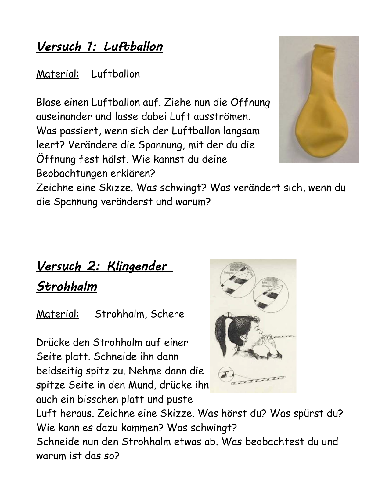
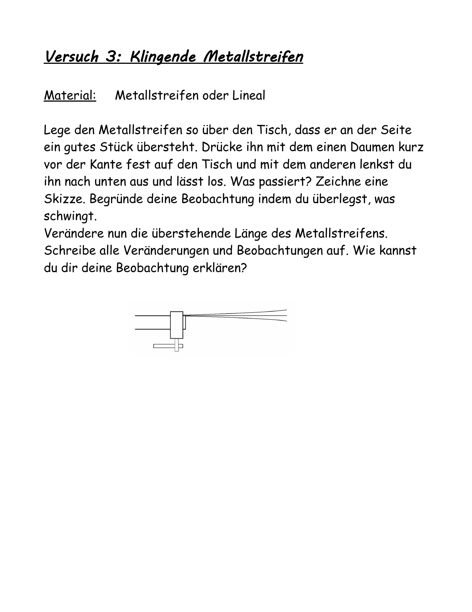
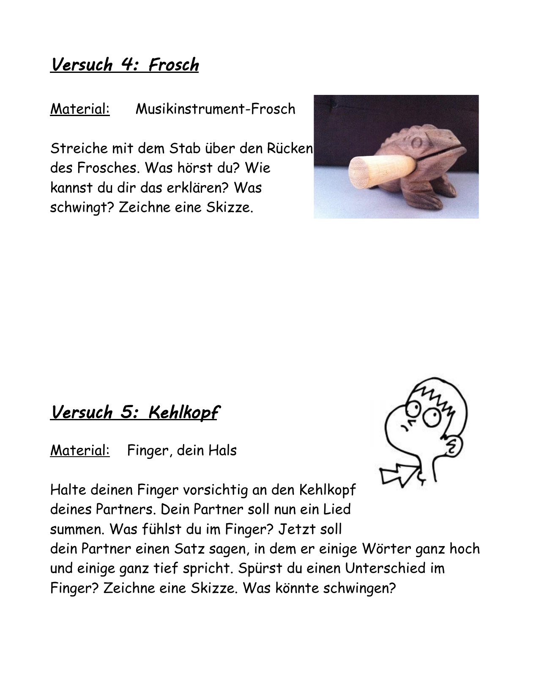
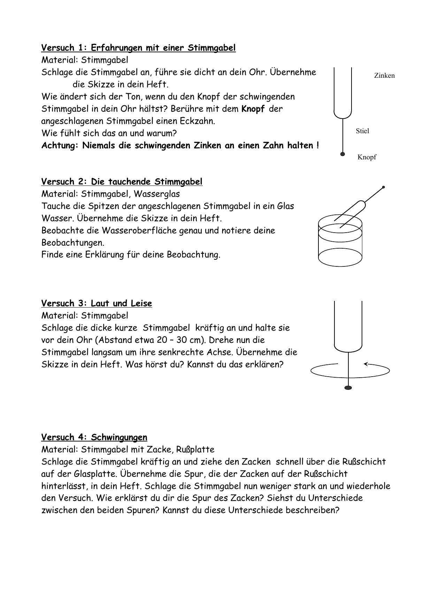
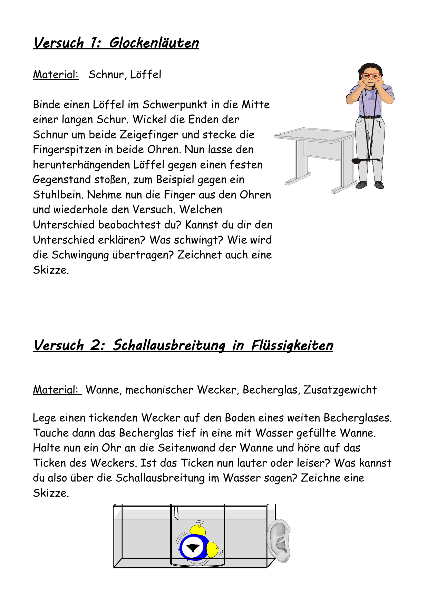
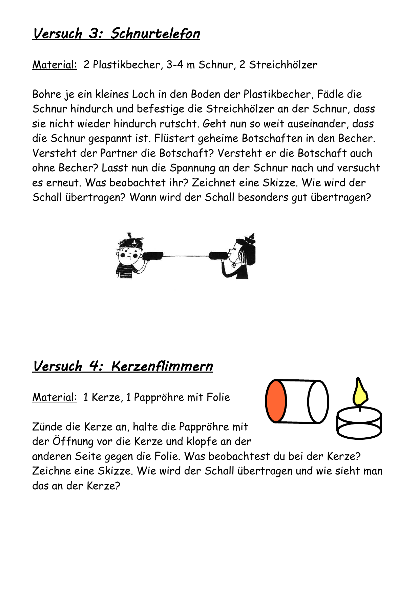

Akustik: Versuche zu Schallerzeugung und Schall unterwegs
Kurze Wiederholung für eine Doppelstunde, Schwerpunkt: beobachten, erklären, sauber dokumentieren.
Leitfrage
Wie entsteht Schall und wie kommt er von der Quelle zu deinem Ohr?
So arbeitest du hier
Lies die kurze Theorie.
Führe die Versuche aus den Arbeitsblättern durch.
Dokumentiere Beobachtung und Erklärung direkt im Essay-Feld.
Nutze am Ende die Ergebnisseite als Sicherung.
Dein Arbeitsauftrag
Suche dir ein bis zwei Versuche aus der Schallerzeugung auf Seite 3, zwei Versuche aus den Stimmgabel-Versuchen auf Seite 4 und einen Versuch aus Schall unterwegs auf Seite 5 aus. Bearbeite genau diese Versuche im HTML und fülle die Versuchsprotokolle sorgfältig aus.
Grundidee: Schall entsteht durch Schwingungen
Schall ist nichts Geheimnisvolles: Immer wenn ein Körper schnell hin und her schwingt, kann er seine Umgebung anstoßen. Genau das passiert zum Beispiel bei einem Lineal, einer Stimmgabel, einem Strohhalm oder an deinem Kehlkopf. Die angrenzenden Teilchen werden dabei ebenfalls in Bewegung versetzt und geben diese Bewegung weiter.
Wichtig ist dabei: Nicht der ganze Stoff wandert von der Schallquelle bis zu deinem Ohr. Stattdessen wird die Störung weitergegeben. Deshalb kann sich Schall in Luft, Wasser und festen Stoffen ausbreiten. Ohne Teilchen, also im Vakuum, funktioniert das nicht.
Merke
Schall entsteht durch eine Schwingung. Diese Schwingung wird an benachbarte Teilchen weitergegeben. So breitet sich Schall in einem Stoff aus.
Jetzt hast du das gelernt:
Eine Schallquelle schwingt. Der Schall selbst ist die weitergegebene Störung. Dein Ohr nimmt diese Schwingung auf.
Ziehe jeweils einen Begriff auf die passende Erklärung.
Begriff
Schallquelle
Schallausbreitung
Tonhöhe
Lautstärke
Erklärung
hängt mit der Schnelligkeit der Schwingung zusammen
der Körper, der selbst schwingt und Schall erzeugt
hängt mit der Größe der Auslenkung zusammen
Weitergabe der Schwingung durch einen Stoff
Gelöst
Versuche zur Schallerzeugung
Hier machst du eigenständig Versuche und dokumentierst deine Beobachtungen. Schwerpunkt: Was schwingt, und wie hängen Tonhöhe oder Lautstärke damit zusammen?
Suche die einen Versuch hiervon aus:
Luftballon oder quietschender Luftballon
Klingender Strohhalm
Suche dir auch einen Versuch hiervon aus:
Frosch
Klingende Metallstreifen oder Schallentstehung bei einem Lineal
Kehlkopf

Luftballon und Strohhalm: Die Tonhöhe ändert sich, wenn sich Länge oder Spannung ändern.

Klingende Metallstreifen: Die freie Länge beeinflusst Schwingung und Ton.

Frosch und Kehlkopf: Nicht nur Geräte, auch dein Körper kann Schall erzeugen.
Stationen zur Schallerzeugung
Luftballon: Öffnung auseinanderziehen, Ton beobachten, Spannung verändern.
Strohhalm: Spitze anblasen, danach kürzen und Ton vergleichen.
Weitere Versuche
Frosch: mit dem Stab über den Rücken streichen und den Klang deuten.
Metallstreifen oder Lineal: freie Länge ändern und Schwingung mit Ton verknüpfen.
Kehlkopf: beim Summen und Sprechen fühlen, was schwingt.
Jetzt hast du das gelernt:
Bei allen Versuchen zur Schallerzeugung gibt es einen Teil, der schwingt. Verändert sich die Schwingung, verändert sich auch der Ton.
Stimmgabel: Schwingung sichtbar, hörbar und fühlbar machen
Die Stimmgabel taucht in den folgenden Versuchen mehrfach auf: am Ohr, am Zahn, im Wasser, auf dem Tisch, beim Drehen und auf der Rußplatte. Genau diese Versuche zeigen besonders klar, dass Schall mit Schwingungen zusammenhängt.

Stimmgabel-Versuche: Erfahrungen am Ohr, im Wasser, laut und leise, Spur auf der Rußplatte.
Diese Stimmgabel-Versuche gehören dazu
Erfahrungen mit der Stimmgabel: am Ohr und vorsichtig über den Knopf am Zahn oder Kopf spüren.
Tauchende Stimmgabel: Spitzen ins Wasser halten und die Wasseroberfläche beobachten.
Laut und leise: Stimmgabel drehen und die Veränderung des Tons wahrnehmen.
Schwingungen auf der Rußplatte: kräftig und schwächer anschlagen und die Spur vergleichen.
Schall unterwegs: Luft, Wasser und feste Stoffe
Mit den folgenden Versuchen prüfst du, wie Schall übertragen wird: Glockenläuten, Schallausbreitung in Flüssigkeiten, Schnurtelefon und Kerzenflimmern.

Schall im Festkörper und im Wasser: Löffel an der Schnur und Wecker im Wasser.

Schnurtelefon und Kerzenflimmern: Schall breitet sich nicht nur in Luft aus.
Vier Versuche, vier Medien
Glockenläuten: Löffel an der Schnur, Finger in den Ohren, Klang vergleichen.
Flüssigkeiten: tickenden Wecker im Wasser hören und Lautstärke deuten.
Schnurtelefon: mit gespannter und lockerer Schnur testen.
Kerzenflimmern: Folie an der Röhre anklopfen und die Flamme beobachten.
Arbeitsauftrag
Notiere immer zuerst die Beobachtung.
Erst danach formulierst du die Erklärung.
Nutze die Wörter Schwingung, Übertragung und Teilchen.
Vergleiche mindestens zwei verschiedene Medien.
Ordne die vier Versuche ihren Kernaussagen zu.
Versuch
Glockenläuten
Schall in Flüssigkeiten
Schnurtelefon
Kerzenflimmern
Kernaussage
Druckschwankungen in der Luft bringen die Flamme zum Zittern.
Auch Wasser kann Schall übertragen.
Ein fester Stoff kann Schall sehr deutlich weiterleiten.
Gespanntes Material überträgt Schwingungen besser als lockere Schnur.
Gelöst
Jetzt hast du das gelernt:
Schall braucht einen Stoff zur Ausbreitung. Je nach Versuch wird klar: Auch Wasser und Festkörper können Schall gut weitergeben.
Sicherung, Transfer und Weiterforschen
Stopp & check: Prüfe jetzt, ob du die Grundideen aus den Versuchen sicher anwenden kannst.
Jetzt hast du gelernt
Schall entsteht durch schwingende Körper.
Tonhöhe und Lautstärke hängen mit der Art der Schwingung zusammen.
Schall kann sich in Luft, Wasser und Festkörpern ausbreiten.
Versuche liefern Beobachtungen, aus denen du Erklärungen ableiten kannst.
Quellen & Weiterforschen
Arbeitsblatt Versuche-Schallerzeugung.pdf
Arbeitsblatt AB_Schall_schwingt.pdf
Arbeitsblatt AB_Schall_unterwegs.pdf
Weiterdenken: Welcher Versuch zeigt Schall am deutlichsten? Begründe deine Wahl mit Beobachtung und Erklärung.